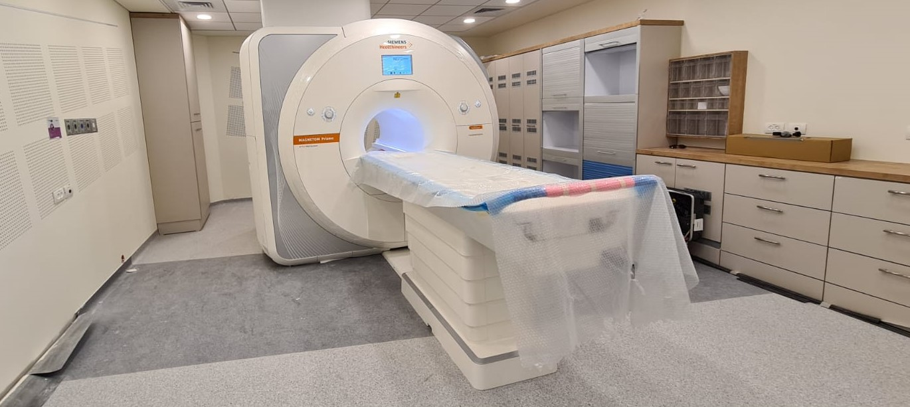
Welcome to the
Technion Computational MRI Lab
Technion Computational MRI Lab
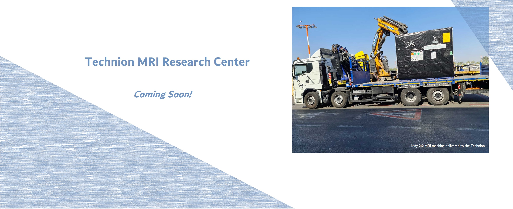
Coming in the fall of 2022: : A new Human MRI Research Center will be opening at the main Technion campus (Neve-Shaanan).
The center will offer a unique research-dedicated 3T Siemens Prisma MRI system with novel capabilities, providing increased access to high-speed structural and functional imaging used to conduct multiple research projects in our lab.
see here.
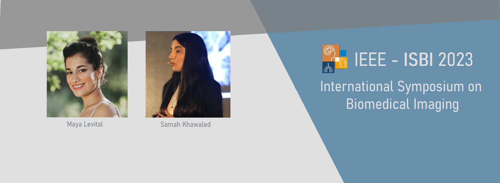
Nov 23, 2022: Congratulations! TCML members,Maya Levital and Samah Khawaled,
had their paper
Uncertainty assessment in Whole-Body Low Dose PET Reconstruction using Non-parametric Bayesian Deep Learning Approachaccepted to the IEEE ISBI 2023 conference in Cartagena deIndias, Colombia to be held April 18-21.

Dec 26, 2022: Congratulations! The TCML lab was awarded 2nd place from the Investment for Data-Driven Research fund sponsored byMicrosoft Azure and the IUCC
to use cloud resources for data-based research.

Nov 23, 2022: Congratulations! TCML member,Yael Zaffrani Reznikov,
was awarded the Student research prize for Cross-PI Collaboration in Data Science for her work in Motion-compensated quantitative Diffusion-Weighted MRI in collaboration with Dr. Simon Warfield of Harvard Medical School.
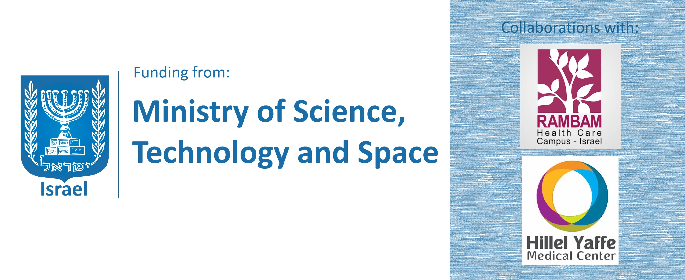
Nov 5, 2022: Congratulations! The TCML lab was awarded 2 grants from the Israeli Ministry of Innovation Science and Technology (MOST)
to develop deep-learning based medical imaging technologies for diabetic pregnancies in collaboration with Prof. Rinat Gabbay-Benziv at Hillel Yaffe Medical center
and Crohn's disease assessment in collaboration with Dr. Anat Ilivitzki at Rambam Medical Center).
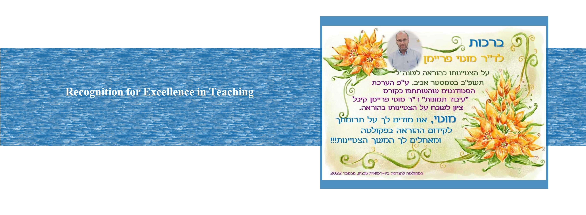
Nov 5, 2022: Congratulations! Dr. Moti Freiman
received recognition for Excellence in Teaching for his course Medical Image Processing, spring semester 2021-2022.

Nov 2, 2022: Congratulations! Itai Guez had his paper
Development of a multimodal machine-learning fusion model to non-invasively assess ileal Crohn’s disease endoscopic activityaccepted to the Journal of Computer Methods and Programs in Biomedicine (I.F. 7.027).
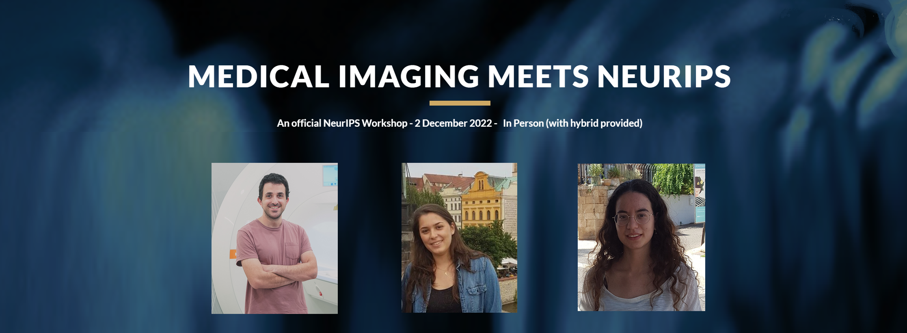
Nov 2, 2022: Congratulations! TCML members (from left to right),Eyal Hanania, Nitzan Avidan, and Lilach Barkat,
had their abstracts, "StyleReg - Style Transfer as a Preprocess Step for Myocardial T1 Mapping" (Eyal and Lilach) and
"Physically-primed deep-neural-networks for generalized undersampled MRI reconstruction" (Nitzan)
accepted to the Medical Imaging meets NEURIPS 2022 conference in New Orleans, USA on Dec 2.
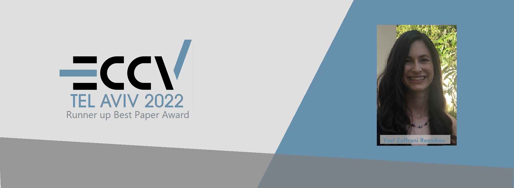
Oct 31, 2022: Congratulations! TCML member,Yael Zaffrani Reznikov,
had her paper, "DWI-Morph: Motion-compensated quantitative Diffusion-Weighted MRI analysis for fetal lung maturity assessment"
awarded Best Paper Runner Up at the Medical computer vision workshop ECCV 2022 in Tel Aviv, Israel.
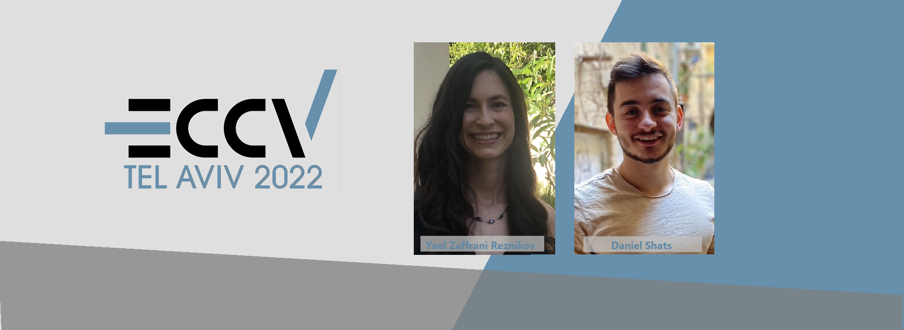
Sept 5, 2022: Congratulations! TCML members,Yael Zaffrani Reznikov and Daniel Shats,
had their papers, "DWI-Morph: Motion-compensated quantitative Diffusion-Weighted MRI analysis for fetal lung maturity assessment" and
"Patient-level Microsatellite Stability Assessment from Whole Slide Images By Combining Momentum Contrast Learning and Group Patch Embeddings",
accepted to the Medical computer vision workshop at the upcoming ECCV 2022 in Tel Aviv, Israel.

June 7, 2022: Congratulations! Samah Khawaled had her paper
NPB-REC: Non-parametric Assessment of Uncertainty in Deep-learning-based MRI Reconstruction from Undersampled Data
accepted to the Machine Learning for Medical Image Reconstruction (MLMIR) Workshop at the International Conference on Medical Image Computing and Computer Assisted Intervention (MICCAI), to be held Sept 18-22 in Singapore. See here.
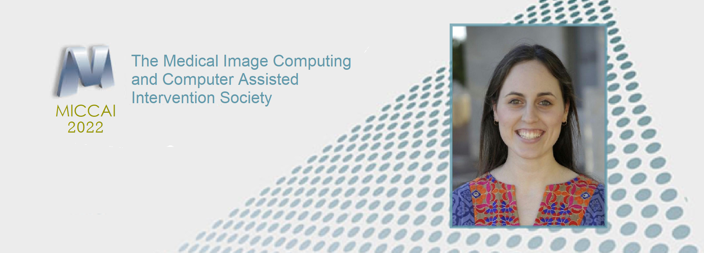
June 7, 2022: Congratulations! Noam Korngut had her paper
SUPER-IVIM-DC: Intra-voxel incoherent motion based Fetal lung maturity assessment from limited DWI data using supervised learning coupled with data-consistency
accepted to the International Conference on Medical Image Computing and Computer Assisted Intervention (MICCAI), to be held Sept 18-22 in Singapore. See here.
June 7, 2022: Congratulations! Maya Gilad had her paper
PD-DWI: Predicting response to neoadjuvant chemotherapy in invasive breast cancer with Physiologically-Decomposed Diffusion-Weighted MRI machine-learning modelaccepted to the International Conference on Medical Image Computing and Computer Assisted Intervention (MICCAI), to be held Sept 18-22 in Singapore. See here.

June 1, 2022: Congratulations! Samah Khawaled had her paper
NPBDREG: Uncertainty Assessment in Diffeomorphic Brain MRI Registration using a Non-parametric Bayesian Deep-Learning Based Approachaccepted to the Journal of Computerized Medical Imaging and Graphics. see here.
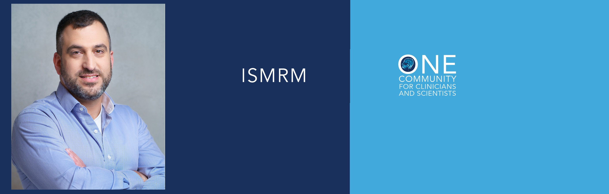
Feb 4, 2022: Congratulations! Elad Rotman had his abstract
SUPER-IVIM-DC, A supervised deep-learning with data consistency approach for IVIM model parameter estimation from Diffusion-Weighted MRI dataaccepted to the upcoming Joint Annual Meeting ISMRM-ESMRMB & ISMRT 31st Annual Meeting to be held May 07-12, 2022 in London, England, UK. See here.
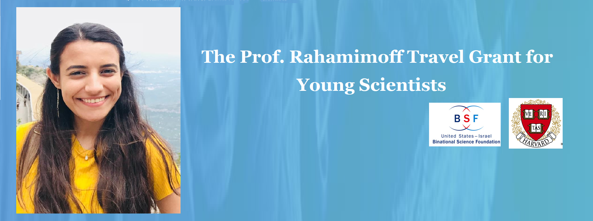
Jan 12, 2022: Congratulations! Samah Khawaled was awarded the
Prof. Rahamimoff Travel Grant for Young Scientists, through the U.S.-Israel Binational Science Foundation (BSF). This grant will enable Samah to collaborate with Prof. Simon's
Computational Radiology Laboratory at Boston Children’s Hospital (CRL).
We are improving patient care through better characterization of the underlying physiological and structural factors in human diseases by developing novel deep-learning-based methods for MRI acquisition and analysis.
Our Research has been funded by:


- Technion Institute of Technology
- הטכניון - מכון טכנולוגי לישראל
- Faculty of Biomedical Engineering
- הפקולטה להנדסה ביו-רפואית
Copyright © All rights reserved | This template is made with by Colorlib